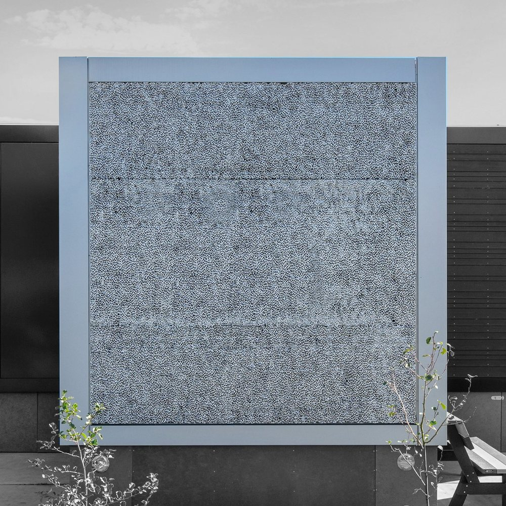

Compact modulair wonen
Bouw minder.Maak meermogelijk.




001 / Referentiewoning[ Gebouwd ]
Eén systeem · Verschillende woningen
Ontworpen.Gebouwd.Bewoond.
Plattegrond · 5 modules


Compact modulair wonen

Eén systeem · Verschillende woningen
Plattegrond · 5 modules